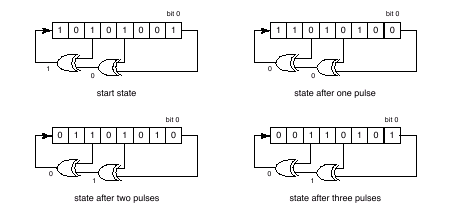

A shift register is a circuit that shifts the elements of a bit array by one position. A shift register has an input (one bit) and an output (also one bit), and is driven by a clock pulse. When the clock pulse happens, the input bit is shifted to the position of the least significant bit, the most significant bit is sent to the register output, and all other bits are shifted by one position to the direction of the array's most significant bit (towards the output).
A Linear Feedback Shift Register (LFSR) is a shift register in which the input bit is determined by the value of the EXCLUSIVE-OR of some of the register bits before the clock pulse. The bits that are used in the register's feedback are called taps. The figure below shows a LFSR with 8 bits and three taps (bits 0,3 and 5).

In this problem you must write a program that, given the number of bits of a LFSR, the information of which of its bits are taps, a start state and a final state, determines how many clock pulses are needed so that, starting from the start state, the LFSR reaches the final state (or determines that that is impossible).
The input contains several test cases. Each test case is composed by three lines. The first line contains two integers N, T, indicating respectively the number of bits (
2N32) and the number of taps (
2TN). The bits are identified by integers from 0 (least significant) to N - 1 (most significant). The second line contains T integers, separated by spaces, describing the bits that are taps, in increasing order. Bit 0 is always a tap. The third line contains two numbers I and F in hexadecimal notation, separated by a blank space, representing respectively the start state and the final state of the LFSR.
The end of input is indicated by a line that contains two zeros separated by a blank space.
For each test case in the input your program must print a single line. If it is possible to reach the final state from the given start state, the line must contain a single integer, the smallest
number of clock pulses needed for the lfsr to reach the final state given. If that is not the case, the line must contain just the character `*'.
8 3
0 3 5
a9 35
5 2
0 4
1b 2
7 3
0 2 3
4d 1a
0 0
3
*
61